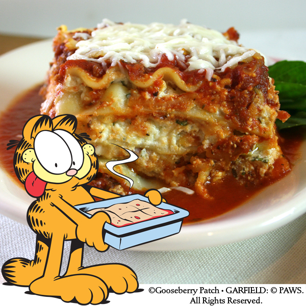

Home
Lasagna
Source: Gooseberry Patch, Classic Lasagna

Ingredients
Yield: Serves 6 to 8
- 10-oz. pkg. lasagna noodles, uncooked
- 1/2 lb. ground beef
- 1/2 lb. ground beef
- 1 onion, diced
- 1 clove garlic, minced
- 14-1/2 oz. can Italian-seasoned stewed tomatoes
- 2 6-oz. cans tomato paste
- 2 T. Italian seasoning
- 3 c. ricotta cheese
- 1/2 c. grated Parmesan cheese
- 2 eggs, beaten
- 2 T. dried parsley
- salt and pepper to taste
- 16-oz. pkg. shredded mozzarella cheese, divided
Steps
- Cook noodles according to package directions; drain
- Meanwhile, in a skillet over medium heat
- Brown beef, sausage and onion; drain
- Add garlic, undrained tomatoes, tomato paste and Italian seasoning; simmer for about 10 minutes
- In a large bowl, blend together ricotta and Parmesan cheeses, eggs and seasonings
- Spread 1/2 cup of beef mixture in a lightly greased deep 13"x9" baking pan
- Layer as follows:
- 1/3 each of noodles
- Cheese mixture
- Beef mixture
- Mozzarella cheese
- Repeat layers, ending with mozzarella
- Cover with aluminum foil
- Bake at 350 degrees for 45 minutes to one hour, until hot and bubbly
- Let stand for 10 minutes before slicing